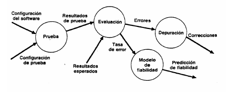
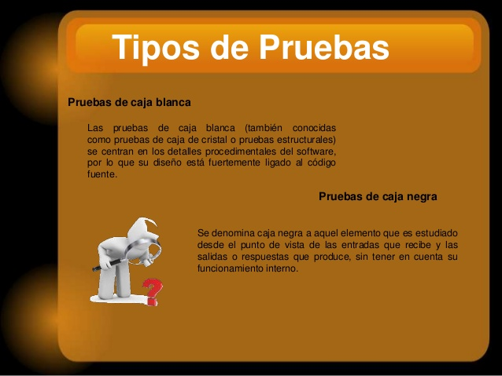

Técnicas de Prueba de Software
Autor: Dayra Lucía Delgado
En la etapa de definición de requerimientos, diseño y desarrollo es indispensable la realización de una serie de actividades para encontrar errores en una aplicación y de esta manera garantizar la calidad del software.
Cuando se habla de fundamentos de la prueba de software se habla de la creaciónn de una serie de pasos que intenta destruir el software desarrollado realizando diferentes pruebas para descartar ideas sobre la calidad o corrección del software, para ello se tiene en cuenta que el objetivo de realizar una prueba es descubrir la mayor cantidad de errores.
.jpg)
Una prueba tiene éxito cuando se descubre un error que no se haya detectado antes. Para ello es importante establecer una técnica para encontrar la mayor cantidad de errores en el menor tiempo mediante un proceso.
En la siguiente imagen se puede evidenciar que hay cuatro fases: la prueba, la evaluación, la depuraciónn y el modelo de fiabilidad, cada uno de ellos tiene otros factores que acompañan el proceso.

Las dos entradas principales en todo proceso de prueba son la primera configuraciónn de software, diseño, requisitos y código fuente y la segunda la configuración de prueba, plan y procedimiento. Los demás factores incluyen resultados de pruebas, resultados esperados, tasa de error, correcciones y predicciónn de fiabilidad.
Todo producto de software se puede probar utilizando dos formas: pruebas de caja negra y las pruebas de caja blanca cada una con especificaciones diferentes, por ejemplo en la prueba de caja negra se pretende demostrar que todas las funciones de software sean operativas, encontrar funciones incorrectas o ausentes, errores de interfaz, de estructura de datos, accesos a las bases, errores de rendimiento, inicialización o terminación; y en las de caja blanca se realiza una búsqueda minuciosa de todos los procedimientos, caminos lógicos, bucles y condiciones.

Las pruebas de la caja blanca garantizan:
- Se pueden ejecutar por lo menos una vez todos los caminos de cada módulo.
- Se usan las decisiones cuando la condición es verdadera y cuando es falsa.
- Se pueden ejecutar todos los bucles.
- Se puedan usar todas las estructuras de datos internas.
Las pruebas de caja negra garantizan:
- Que todas las funciones de software sean operativas.
- La entrada que sea aceptada de forma correcta.
- La integridad de la informaciónn externa.